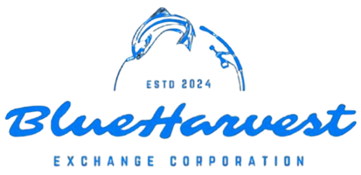
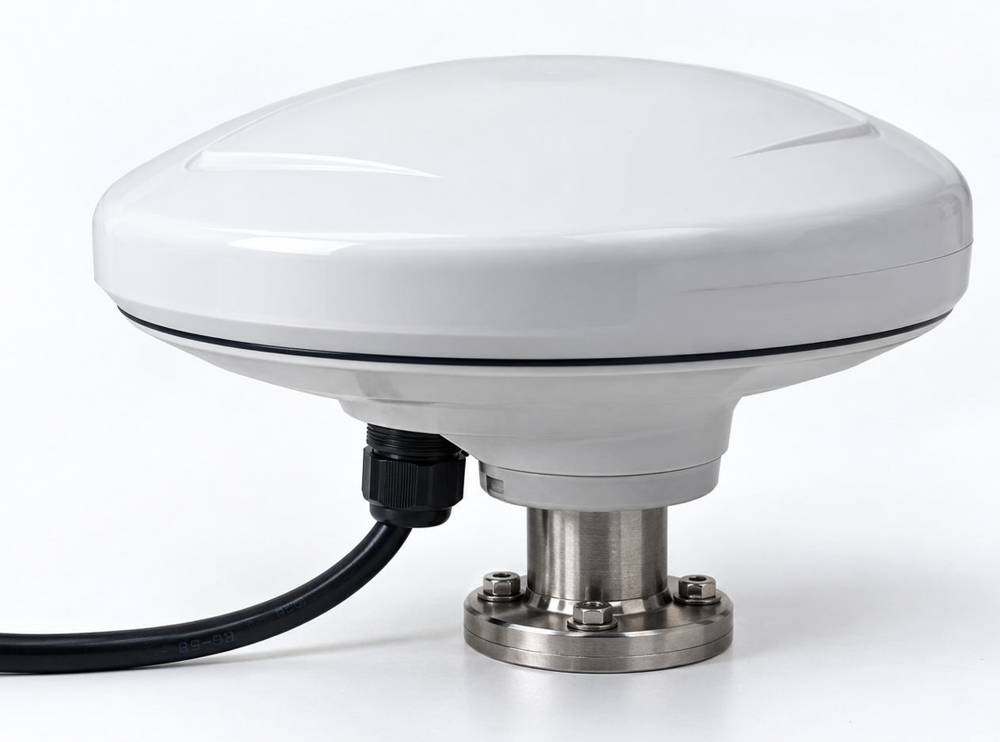
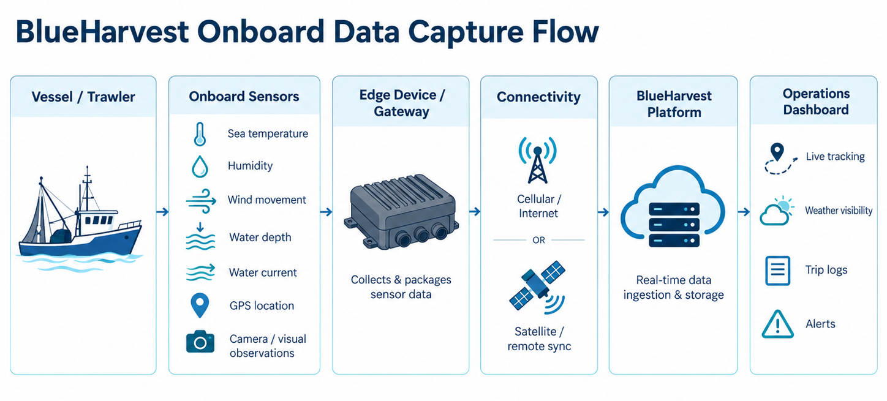
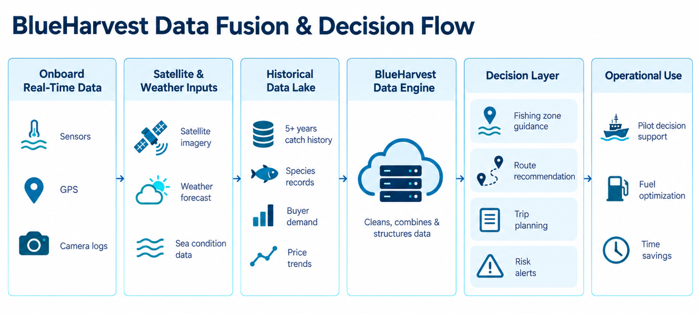

Vessel owners
Better voyage information means greater visibility into how their vessels are being operated.

Available now
Smarter fishing. Connected operations. Better market decisions.
Vessel-mounted IoT hardware, location tracking, environmental information, satellite intelligence, historical fishing records, and seafood market data, brought into one fishing ecosystem.
At BlueHarvest, we are working to transform how fishing vessels operate, how their activities are monitored, and how their catch reaches the market.
Traditionally, a fishing trip begins with experience, local knowledge, and an estimate of where fish may be available. Once the vessel leaves the harbour, owners often have limited visibility into its journey, operating conditions, and activities at sea. Meanwhile, the information generated during the trip rarely connects directly with the price and quality assessment that happens after landing.
BlueHarvest is building a technology layer to bridge this gap. By connecting fishing activity with data collected at sea and commercial information from the marketplace, our system is designed to help vessel operators make more informed decisions, improve operational visibility, and build greater transparency throughout the seafood value chain.
From the first voyage position to the final seafood transaction, we aim to make every stage more connected, measurable, and accountable.
The voyage
A fishing vessel does much more than travel from the harbour to the fishing ground and return with its catch.
Throughout its journey, it moves through changing weather conditions, water environments, fishing zones, and operational situations. Each of these activities generates information that can be useful for planning, monitoring, and improving future fishing operations.
BlueHarvest's Smart AI Trawler Support System is designed to capture and organise this information through an onboard IoT hardware platform. The system associates vessel position, movement, time, environmental readings, and recorded voyage activities with an individual fishing trip. This creates a structured digital history of what happened at sea.
Weather forecasts, available ocean information, historical fishing activity, and relevant operational considerations can be reviewed to support voyage planning. This helps the operator assess conditions before deciding where and when to travel.
As the vessel moves, the onboard system records its geographical location and movement over time. Depending on the installed sensors and available data sources, environmental conditions such as temperature, humidity, and wind can also be incorporated into the voyage record.
Fishing-related activities and important events can be recorded with their location and timestamp. Over time, this makes it possible to understand where fishing operations took place and how those activities relate to environmental conditions and reported catch outcomes.
When the vessel returns to the harbour, its voyage information can be linked with catch details, species, quantities, grading, and subsequent commercial transactions.
Instead of treating each fishing trip as an isolated activity, BlueHarvest aims to turn every completed journey into a useful source of operational knowledge.
Better voyage information means greater visibility into how their vessels are being operated.
A stronger information base for planning future journeys.
An opportunity to connect catch origins with handling, quality assessment, and market transactions.
Structured voyage information can contribute to more transparent and responsible fishing practices.
The hardware
At the centre is a vessel-mounted Internet of Things hardware platform. It collects important information during a fishing trip, organises it, and makes it available for analysis and operational monitoring.
The hardware system brings together positioning technology, environmental sensing inputs, an onboard data controller, and communication capabilities. Instead of relying entirely on handwritten registers, verbal updates, or information collected only after the vessel returns, the platform is being developed to maintain a digital record of voyage activities.
GNSS positioning provides geographical coordinates that can be associated with the vessel throughout its journey. These records help build a digital voyage track, including the locations visited and the sequence of vessel movements. Position and time also form the foundation for connecting other datasets to the same fishing trip.
Where compatible sensors are installed, the hardware can collect environmental readings such as air temperature, humidity, and wind conditions. These readings can be considered alongside weather forecasts to provide a broader picture of the operating environment.
Water temperature, currents, sea-surface conditions, ocean colour, tides, and depth-related context may influence fishing operations. Not every parameter needs to be measured directly by the vessel. Certain information can come from satellite observations, forecast services, marine datasets, or existing vessel instruments. Directly measured values stay distinct from externally sourced data.
A fishing trip involves departure, movement between locations, fishing activity, changes in operating conditions, and arrival back at the harbour. The proposed event-recording system associates activities with their timestamps and vessel locations, so the voyage can be reviewed and used in later operational analysis.
Visual observations can add further context to selected onboard or landing-stage activities. Camera-based observation and computer-vision applications form a separate development stream. Their integration depends on the final hardware configuration and software validation.
Information captured through onboard devices is processed by an edge controller. It is intended to organise incoming readings, associate them with vessel and trip identifiers, apply timestamps, and prepare the records for transmission. When a vessel moves beyond reliable mobile coverage, information can be buffered locally and synchronised once a supported connection is available.




The central processing unit, housed in a rugged, marine-suitable enclosure. It collects data from connected sensors, GPS equipment, cameras, and vessel monitoring systems, then processes and timestamps incoming information, stores operational records locally, and transmits data to the BlueHarvest platform when connectivity is available.
A compact monitoring unit with visual indicators for power, connectivity, and system operation. It lets vessel operators check the IoT equipment, identify connectivity interruptions, and recognise potential device faults.
A marine positioning component that receives satellite navigation signals and provides geographical information through a compatible GNSS receiver. It supports vessel tracking, speed and course monitoring, route history, fishing-location records, and timestamped voyage mapping.
An environmental sensor that measures ambient air temperature and relative humidity around the vessel. The readings document atmospheric conditions during a trip and can be combined with weather forecasts and historical observations.
A marine anemometer that records wind speed during vessel operations. Where a compatible wind-direction sensor is included, the system can also capture wind direction. These measurements support environmental monitoring and weather-related decisions.
Marine-suitable cables, sealed connectors, and wiring assemblies that link the IoT controller with sensors, antennas, communication equipment, and the vessel's electrical system. They support data transmission and electrical connectivity in moisture, salt exposure, and vessel vibration.
Corrosion-resistant brackets, clamps, and mounting accessories used to install hardware on suitable vessel structures. They hold GPS antennas, weather sensors, cameras, and other external components, and help protect the equipment against movement and vibration.
An onboard visual interface for vessel information and operational records. Depending on system integration, the display can show vessel position, route history, environmental readings, operational alerts, and other monitoring information.
A marine-suitable camera at selected locations such as the fishing deck, net-handling area, or catch-unloading point. It records onboard activity, supports remote oversight where connectivity permits, and keeps footage of important voyage events. That footage may also support future computer-vision applications.
An acoustic sensor that measures water depth beneath the vessel. It sends sound pulses into the water and uses the returning echoes to determine depth. Those measurements can be tied to vessel coordinates, supporting navigation awareness and analysis of fishing across different depths.
A fuel-monitoring arrangement that measures or derives diesel consumption through compatible flow sensors, engine interfaces, or other validated methods. It supports analysis of fuel use across trips, operating durations, routes, and fishing activities, and can help identify ways to manage fuel and operating cost.
A temperature sensor inside the fish-storage or insulated holding compartment. It records conditions while the catch is at sea and can raise alerts when readings move outside configured limits. The record can support catch handling, quality documentation, and traceability.
Integration with compatible sonar or fish-finding equipment used to observe underwater acoustic returns, fish-like targets, water depth, and seabed structures. Where supported, sonar information can be associated with GPS coordinates and environmental observations for fishing-ground assessment and historical catch analysis.
A recording application on the vessel's IoT and voyage platform. Authorised crew can record species, quantity, estimated weight, fishing location, date, time, and related operational information. Those records can later connect with landing, grading, storage, and trading on the BlueHarvest platform.
An engine-monitoring arrangement connected to compatible sensors or electronic control interfaces. It can collect engine RPM, operating hours, coolant temperature, oil pressure, and available diagnostic information, in support of performance monitoring, abnormal-condition checks, maintenance planning, and comparison with fuel use and voyage efficiency.

GPS position, speed, movement, routes, and digital trip records.
Atmospheric conditions, wind, water depth, and integrated sonar information.
Fuel consumption, engine performance, and fishing activity monitoring.
Camera-based observation, device status, and configured operational alerts.
Fish-hold temperature monitoring and digital catch records.
Vessel records brought together with satellite information, historical catch data, and seafood market activity.
Together, these systems form the proposed hardware and operational-data foundation of the Smart AI Trawler Support System, connecting fishing-vessel activities with seafood supply-chain intelligence.
Connected intelligence
Collecting data is only the beginning. A vessel's location tells us where it travelled. A weather reading tells us what conditions were observed. A catch record tells us what was landed. Greater value can emerge when these pieces are studied together.
Information captured through onboard IoT equipment provides the operational foundation: vessel coordinates, movement, timestamps, available environmental readings, and recorded fishing activities. These records answer an essential question: what happened during the fishing trip, and where did it happen?
Satellite observations and marine information services provide context beyond the area immediately surrounding a vessel. Depending on availability, they can offer sea-surface temperature, ocean-colour patterns, water movements, weather systems, and other environmental indicators. Associated with vessel location and time, they build a broader environmental profile of a journey. Satellite information is supporting context. It is not a guarantee that fish will be present in a particular location.
BlueHarvest is working with approximately five years of referenced historical fishing and commercial information, subject to data verification and preparation. Relevant records include fishing locations, species, catch quantities, trip activity, seasonal changes, and other available operating details. These relationships need to be tested against verified data before they can support dependable recommendations.
The value of a fishing trip is determined not only by how much fish is caught but also by the market in which that catch is sold. Buyer participation, species demand, incoming supply, product quality, storage availability, and prevailing transaction prices can all influence the final commercial outcome. Trading operations provide a way to connect this market information with the supply-side journey.

When these datasets are brought together, BlueHarvest can begin building a more complete operational picture. The vessel provides the journey. Satellite information adds environmental context. Historical records provide evidence of previous outcomes. Market activity shows the commercial result. Together, they create the foundation for developing more useful fishing and trading intelligence.
Decision support
Fishing remains a complex activity influenced by changing marine conditions, regulations, fuel costs, crew experience, and the unpredictable availability of fish. BlueHarvest is building technology to support the operator's judgement with better information.
By analysing historical fishing locations, environmental conditions, and available marine information, BlueHarvest is working toward identifying patterns that may support future fishing-ground recommendations. The aim is to help pilots compare potential operating areas using more than experience or historical assumptions alone. As the underlying datasets and models mature, this approach could provide more informed guidance on where fishing activity may be worth considering. All recommendations remain advisory and subject to operating regulations, weather conditions, and the judgement of the licensed vessel operator.
Fuel is a significant part of a fishing vessel's operating expenditure. Unnecessary movement, extended search periods, and poorly planned journeys can increase costs without improving the catch. With better voyage records and relevant environmental information, the platform is being developed to support more informed route planning and trip-efficiency analysis. The objective is to identify opportunities to reduce avoidable travel, improve time utilisation, and make vessel operations more economical. Any actual savings will depend on the vessel, trip conditions, operational decisions, and field validation.
Vessel owners need to understand more than the final quantity landed. They also need visibility into the journey itself. A connected voyage record can help owners review where their vessel travelled, how long activities took, which events were recorded, and how each trip compares with previous operations. Over time, this can contribute to stronger operational oversight, more consistent reporting, and improved planning.
BlueHarvest is also exploring how digital voyage records and verified geographical information can support responsible fishing practices. Potential applications include awareness of designated fishing and restricted areas, improved recording of fishing activities, and better documentation for future bycatch analysis and compliance-related workflows. These functions are intended to support regulatory awareness and recordkeeping. They do not replace statutory monitoring or certification systems.
The record
One of the most important goals is continuity between offshore fishing operations and onshore seafood trading.
Today, much of the fishing industry's information remains fragmented. A vessel may have its own trip records. The landing point may maintain separate catch registers. Quality assessments may be recorded independently. Trading information may be held by a completely different set of participants. When these records are disconnected, understanding the complete journey of a seafood lot becomes difficult.
BlueHarvest is developing a system in which these activities can be connected through identifiable digital records. The sequence begins when a vessel departs. As the fishing trip progresses, location information, operational events, and applicable environmental data are associated with the voyage. Once the catch is landed, information such as species, quantity, landing time, and source vessel can be linked to the corresponding trip. The next stages can add grading results, lot information, buyer participation, sale price, and storage or dispatch decisions.
This creates a pathway toward better traceability from the fishing journey to the commercial transaction. For BlueHarvest, traceability is not simply about knowing where a fish came from. It is about connecting the important events that shaped its journey from sea to market.
From catch to commerce
Offshore technology records and interprets fishing operations. The onshore workflow covers how the resulting catch is assessed, presented, traded, stored, and delivered.
When a fishing vessel returns to the harbour, the catch enters the next stage of the process. Relevant information such as species, weight, quantity, and source vessel can be recorded against the corresponding trip. This establishes the connection between offshore operations and the seafood entering the trading process.
Seafood quality has a direct influence on buyer confidence, market access, and pricing. BlueHarvest is developing a more structured grading process that can combine physical inspection, established operating procedures, and technology-supported assessment. A separate computer-vision workstream is being developed for species recognition, size classification, and visual freshness assessment. These capabilities require training, validation, and consistent grading standards. Chemical-safety checks, including formalin, heavy metals, and other contaminants, require appropriate validated testing methods and cannot be established through visual analysis alone.
Following sorting and grading, seafood can be presented to participating buyers through the trading process. The digital trading vision is designed to improve access to product information, buyer participation, and price discovery, including on-location and remote participation through supported channels. Greater visibility into product characteristics, availability, and market demand can help buyers make more informed purchasing decisions.
Seafood is highly perishable, and the timing of its sale and handling can affect its market value. The operating model includes collaboration with cold-storage providers and connected storage and logistics workflows. This can create additional options for buyers and sellers who may not wish to move or sell the entire catch immediately. Connecting storage decisions with trading and fulfilment records supports coordination after landing.
The intelligence layer
Every trip adds another set of observations. Every landing provides information about catch outcomes. Every transaction adds a commercial result. When these records are consistent, reliable, and properly linked, they can be used to develop and evaluate predictive models.
Future models are intended to study the relationship between location, marine conditions, seasonal patterns, and historical catch records. The goal is to provide probability-based guidance that may support fishing-ground selection and trip planning.
Voyage duration, route information, movement patterns, and actual operating outcomes can support analysis of trip efficiency. With sufficient validated information, the platform may help identify differences in operating performance and opportunities for improved resource utilisation.
Historical catch records can help identify how the availability of different species changes by season and geography. Connecting these patterns with environmental information can strengthen the basis for future fishing and supply planning.
BlueHarvest also aims to study the relationship between species availability, incoming volumes, buyer demand, seasonality, quality grades, and transaction prices. This creates a pathway toward market trend analysis and future price-support tools for decisions about when, where, and how to sell.
Who it is for
Technology should make everyday operations easier. The system is being developed around the people who work throughout the seafood value chain.
Better visibility into vessel movement, trip history, recorded activities, and operating performance, in support of stronger oversight and more informed business decisions.
Access to relevant weather, ocean, and historical information that can support practical decision-making during voyage planning and fishing operations.
Greater access to structured catch information, grading results, available quantities, and trading opportunities.
A pathway toward better product traceability, documented quality assessments, and more transparent sourcing information.
More consistent digital records can support future research, responsible fishing initiatives, and a clearer picture of industry activity, subject to appropriate permissions and safeguards.
How we build
Hardware, software, artificial intelligence, and the marketplace are being developed as parts of the same operating system. Advanced AI capabilities move forward as technical verification and operational testing allow.
A connected future
The fishing industry has traditionally operated through separate networks of vessel owners, pilots, traders, buyers, storage providers, and seafood businesses. Each participant contributes to the journey, but the information connecting them is often incomplete.
BlueHarvest is working to change that. The vision is a connected ecosystem where fishing journeys generate useful operational records, seafood quality is assessed through consistent processes, market participants have better information, and transactions become more transparent.
Through IoT-enabled vessel data, environmental intelligence, digital trading, and developing AI-assisted decision tools, we aim to connect activities that have historically remained separate. This approach supports three long-term priorities: improved fishing efficiency, stronger seafood-market transparency, and more responsible use of marine resources.
From the fishing vessel to the final marketplace. Vessel operations, data intelligence, seafood grading, digital trading, and supply-chain coordination.